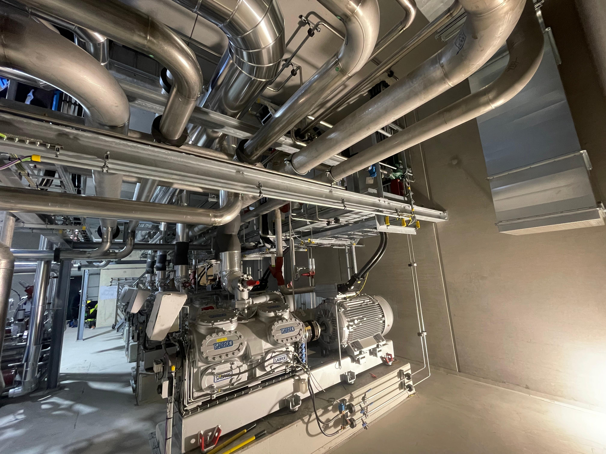
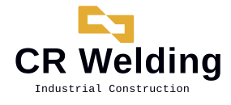
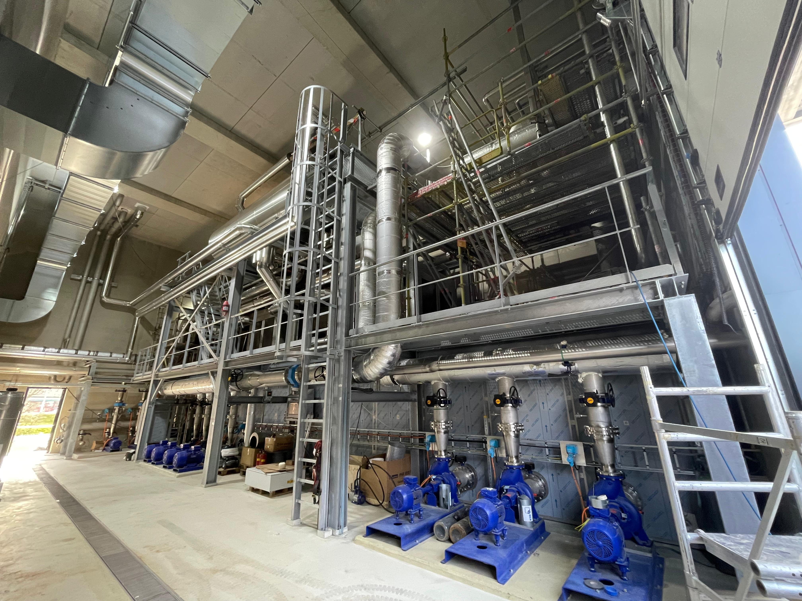
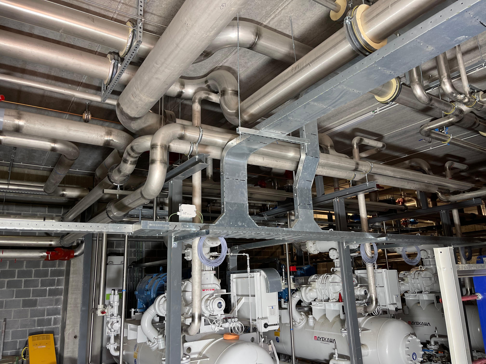
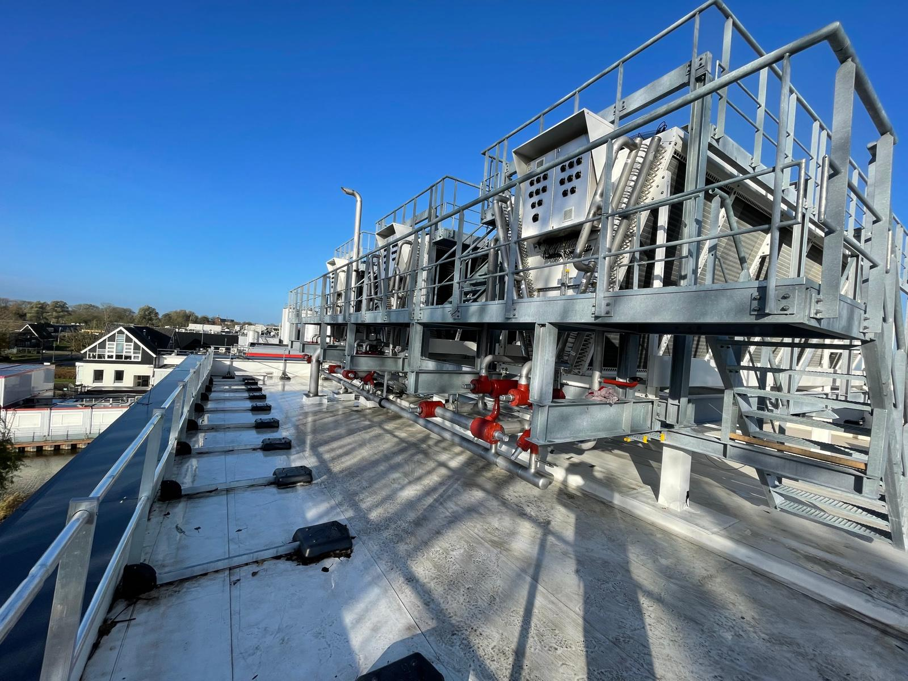
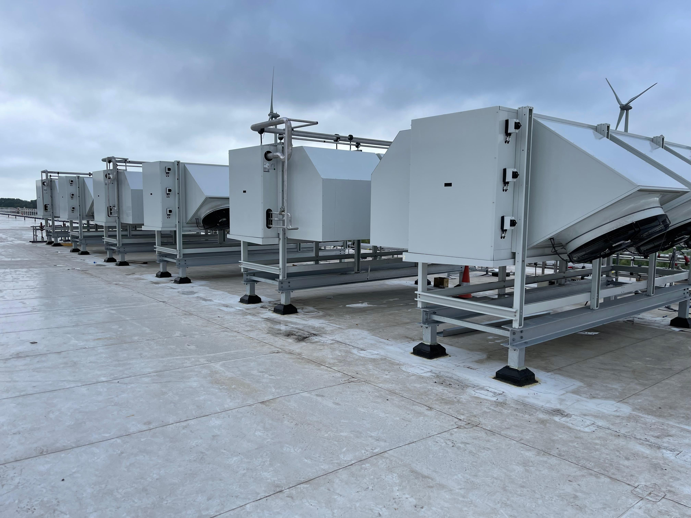

01

Refrigeração Industrial NH₃ + Glicol
Sistemas de tubulação e distribuição térmica para aplicações industriais que exigem elevado desempenho e confiabilidade operacional.

SERVIÇOS
A CR Welding especializa-se em fabricação de tubulações industriais, soldagem TIG de alta integridade, montagem mecânica e fabricação de skids, atendendo projetos Greenfield, Brownfield, paradas industriais e modernizações.
CAPACIDADES

Sistemas de tubulação e distribuição térmica para aplicações industriais que exigem elevado desempenho e confiabilidade operacional.

Montagem de equipamentos, válvulas, bombas e redes de tubulação para sistemas industriais de refrigeração e utilidades.

Integração de tubulações, suportes e estruturas para instalações industriais de elevada exigência técnica.

Fabricação e montagem de tubulações industriais para sistemas com amônia (NH₃), glicol e CO₂.

Tubulações industriais para integração de condensadores em sistemas de refrigeração.

Interligações industriais para condensadores e equipamentos auxiliares de refrigeração.
SETORES
Instalação de tubulações industriais, montagem mecânica e integração de sistemas em novas plantas, expansões de capacidade e modernizações industriais.
Sistemas de amônia (NH₃), glicol, CO₂, água de processo e utilidades industriais para ambientes produtivos de elevada exigência técnica.
Intervenções em plantas em operação, incluindo paradas industriais, substituição de tubulações e adequações técnicas para melhoria da confiabilidade operacional.
Tubulações e sistemas para aplicações químicas, alimentares e industriais, executados com foco em qualidade, segurança e integridade das instalações.